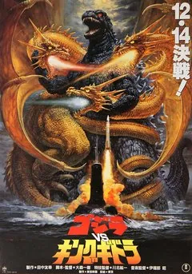

The genetics
Genetic engineering creates the film's second monster. The Futurians plant three genetically engineered creatures, the Dorats, on Lagos Island in 1944; the 1954 hydrogen-bomb test turns them into King Ghidorah, a monster the visitors control and use to bring Japan to its knees. Godzilla's own origin is radiation-induced mutation of a surviving dinosaur rather than deliberate engineering. The engineers are villains with a political aim: they want to destroy present-day Japan to stop it from becoming a 23rd-century superpower, and they die when their ship is destroyed; only Emmy, who betrays them, is sympathetic. Genetics here is a tool of conquest that produces an uncontrollable weapon, as in much of the kaiju genre, and the radiation-fusion of engineered animals into a giant three-headed dragon is pure fantasy.
How genetics is portrayed
- Overall portrayal of genetics
- negative Genetic engineering appears only as the villains' means of creating a monster to conquer Japan.
- Outcome of the genetic intervention
- negative The engineered Dorats become King Ghidorah, which the Futurians use to attack and threaten Japan until Godzilla defeats it.
- The Futurians (Wilson and Grenchiko)
- villain Aim: power, military (negative). They plant engineered Dorats to create King Ghidorah and use the monster to subjugate Japan and prevent its future dominance. Their saviour pose is exposed as a lie, and they die when Godzilla destroys their ship; Emmy, who betrays them, is the sympathetic exception.
The story
In 1992 a UFO lands near Mount Fuji carrying 'Futurians' from the year 2204, who say that Godzilla will destroy Japan in their time. They propose travelling back to 1944 to remove from Lagos Island the dinosaur that nuclear tests later turned into Godzilla. Writer Kenichiro Terasawa, psychic Miki Saegusa and Professor Mazaki join them. In 1944 the dinosaur is teleported to the Bering Strait, but the Futurians secretly leave behind three small creatures, the Dorats, which radiation fuses into the three-headed King Ghidorah. Back in 1992 they use Ghidorah to attack Japan, whose future economic dominance they want to prevent. Futurian Emmy Kano turns against them. Godzilla, recreated by radiation from a sunken submarine, defeats Ghidorah and destroys the Futurians' ship, and Emmy returns from the future with the cyborg Mecha-King Ghidorah to stop Godzilla.